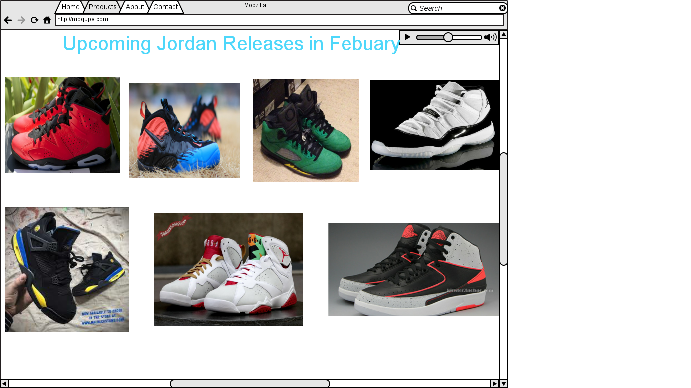

| 2 rows | |
|---|---|
Welcome fellow athletes and Jordan enthusiast, to the site about the great shoe line that are Jordans.
Welcome fellow athletes and Jordan enthusiast, to the site about the great shoe line known as Jordans. My name is Zachary Hubbard, me and my associates Solomon Spaulding, Nick Barrioz. Solomon and Nick are serious Jordan lovers, they pretty much know any new or old Jordan brand sneakers. In a way you could say that Nick and Solomon are Jordan sneaker connoiseurs when it comes to Jordans. This site designed my three of us will help you learn more about Jordans, new, old, the good looking, and the ugly.